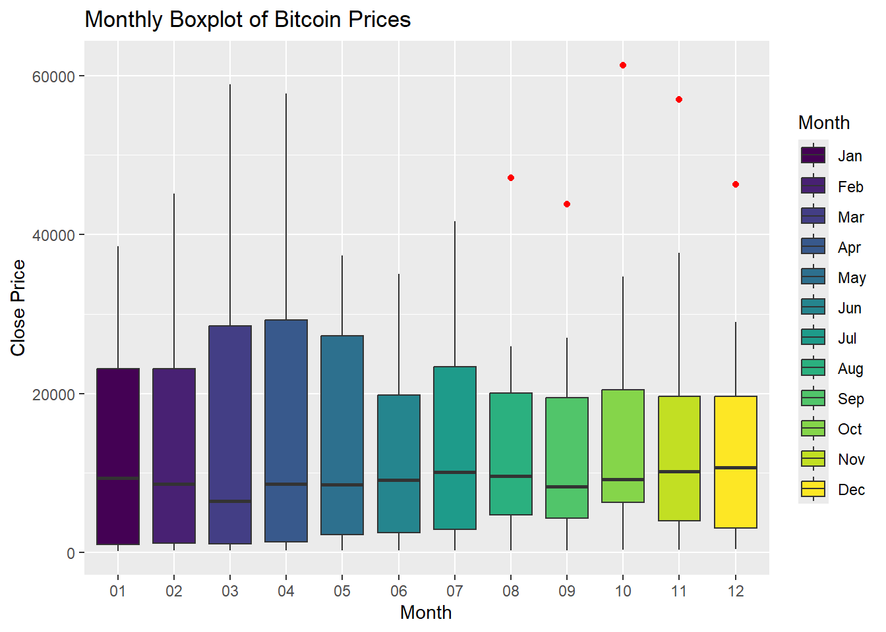

Chapter 2 Descriptive Analytics
Copy the BitCoin data frame to a new data frame named BitCoin_df. In the new data frame create two more columns ‘month’ & ‘year’ by populating with the months & years values from the ‘Date’ column.
- Create a monthly boxplot of prices.
- Create a yearly boxplot of prices.
- Create year wise trend lines of prices. – Convert the BitCoin data frame to a time series object with frequency 1.
- Plot the time series of monthly prices on years. Use blue color dots to plot the data points. Connect the points with a line.
- Find the relationship between consecutive Months. Show the correlation through a scatter plot.
Create a monthly boxplot of prices.
# 1. Create a monthly boxplot of prices
ggplot(BitCoin_df, aes(x = factor(month), y = Close, fill = factor(month))) +
geom_boxplot(outlier.colour = "red") +
labs(title = "Monthly Boxplot of Bitcoin Prices", x = "Month", y = "Close Price") +
scale_fill_viridis_d(name = "Month", labels = month.abb)
Code explanation here
- The boxplot shows that Bitcoin prices exhibit some level of seasonal variation.
- Prices tend to be higher during certain months (March, April, May) compared to others ( June, July).
- This could indicate seasonal trends or cycles in the market.
- The presence of outliers (red dots) in some months, especially in May and September, indicates that there were extreme price changes during these periods.
Create a yearly boxplot of prices.
library(RColorBrewer)
# 2. Create a yearly boxplot of prices
color_palette <- brewer.pal(9, "Set3") # 9 colors for 9 years
#the boxplot with a legend for the years
ggplot(BitCoin_df, aes(x = factor(year), y = Close, fill = factor(year))) +
geom_boxplot(outlier.colour = "red") +
labs(title = "Yearly Boxplot of Bitcoin Prices", x = "Year", y = "Close Price") +
scale_fill_manual(name = "Year", values = setNames(color_palette, as.character(2015:2023))) +
theme(legend.position = "right")
Code explanation here
- A boxplot showing the distribution of Bitcoin closing prices over different years.
- Each box represents the interquartile range (IQR) of the closing prices for a particular year, with the horizontal line inside the box indicating the median price. T
- he whiskers extend to the minimum and maximum values within 1.5 times the IQR from the first and third quartiles, respectively.
- Outliers beyond this range are shown as individual points.
Create year wise trend lines of prices.
# 3. Create year-wise trend lines of prices
ggplot(BitCoin_df, aes(x = Date, y = Close, color = year)) +
geom_line() +
labs(title = "Year-Wise Trend Lines of Bitcoin Prices", x = "Date", y = "Close Price") +
theme(legend.position = "bottom")
Explanation of Plot
- A trend line showing the price of Bitcoin changes over different years.
- 2015,2016: Bitcoin prices were relatively low and stable, with prices mostly below $1,000.
- 2017: Significant growth was observed, with prices starting below $1,000 and rising to nearly $20,000 by the end of the year.
- 2018,2019: After the peak in 2017, prices dropped significantly, fluctuating between $3,000 and $10,000.Prices started to recover, stabilizing between $3,000 and $12,000.
- 2020: There was a steady increase, with prices rising from around $5,000 to over $30,000 by the end of the year.
- 2021: Marked a dramatic rise, with Bitcoin prices reaching new all-time highs, peaking around $60,000.
- 2022: Prices were highly volatile, with significant drops and recoveries, ranging from $30,000 to $50,000.
- 2023: Prices appeared to stabilize somewhat, fluctuating between $20,000 and $40,000.
Convert the BitCoin data frame to a time series object with frequency 1
# Convert the BitCoin data frame to a time series object with frequency 1
bitcoin_ts <- ts(BitCoin_df$Close, start = c(as.numeric(format(min(BitCoin_df$Date), "%Y")), 1), frequency = 1)
# Print the time series object
print(bitcoin_ts)## Time Series:
## Start = 2015
## End = 2121
## Frequency = 1
## [1] 217.464 254.263 244.224 236.145 230.190 263.072 284.650
## [8] 230.056 236.060 314.166 377.321 430.567 368.767 437.697
## [15] 416.729 448.318 531.386 673.337 624.681 575.472 609.735
## [22] 700.972 745.691 963.743 970.403 1179.970 1071.790 1347.890
## [29] 2286.410 2480.840 2875.340 4703.390 4338.710 6468.400 10233.600
## [36] 14156.400 10221.100 10397.900 6973.530 9240.550 7494.170 6404.000
## [43] 7780.440 7037.580 6625.560 6317.610 4017.269 3742.700 3457.793
## [50] 3854.785 4105.404 5350.727 8574.502 10817.155 10085.628 9630.664
## [57] 8293.868 9199.585 7569.630 7193.599 9350.529 8599.509 6438.645
## [64] 8658.554 9461.059 9137.993 11323.467 11680.820 10784.491 13780.995
## [71] 19625.836 29001.721 33114.359 45137.770 58918.832 57750.176 37332.855
## [78] 35040.836 41626.195 47166.688 43790.895 61318.957 57005.426 46306.445
## [85] 38483.125 43193.234 45538.676 37714.875 31792.311 19784.727 23336.896
## [92] 20049.764 19431.789 20495.773 17168.566 16547.496 23139.283 23147.354
## [99] 28478.484 29268.807 27219.658 30477.252 29230.111 25931.473 26967.916
## [106] 34667.781 37712.746Plot the time series of monthly prices on years. Use blue color dots to plot the data points. Connect the points with a line.
# Plot the time series of monthly prices on years
ggplot(BitCoin_df, aes(x = Date, y = Close)) +
geom_point(color = "blue") + # Blue color dots for data points
geom_line(color = "blue") + # Connect the points with a line
labs(title = "Time Series of Monthly Bitcoin Prices",
x = "Year",
y = "Close Price") +
theme_minimal()
Explanation of Plot
Explanation of the Plot:
- Horizontal Axis (Year): Represents the timeline from 2016 to 2024.
- Vertical Axis (Close Price): Represents the closing price of Bitcoin at the end of each month.
- Blue Dots: Each dot represents the closing price of Bitcoin for a particular month.
- Blue Line: Connects the dots to show the trend and continuity of Bitcoin prices over time.
- The plot provides a visual representation of Bitcoin’s price volatility and trends, making it easier to analyze patterns and potential factors affecting its value over the given period.
Result
The plot reveals significant fluctuations in Bitcoin prices, including notable peaks around 2021 and subsequent declines. The most recent data indicates a rising trend in prices again.
Find the relationship between consecutive months. Show the correlation through a scatter plot.
library(dplyr)
library(ggplot2)
library(lubridate)
# Aggregate the data by month
BitCoin_df_monthly <- BitCoin_df %>%
mutate(YearMonth = floor_date(Date, "month")) %>%
group_by(YearMonth) %>%
summarise(Monthly_Close = last(Close)) %>%
arrange(YearMonth)
# Create a new column for the previous month's closing price
BitCoin_df_monthly <- BitCoin_df_monthly %>%
mutate(Prev_Month_Close = lag(Monthly_Close, 1))
# Remove the first row with NA value in Prev_Month_Close
BitCoin_df_monthly <- BitCoin_df_monthly %>%
filter(!is.na(Prev_Month_Close))
# Calculate the correlation
monthly_correlation <- cor(BitCoin_df_monthly$Monthly_Close, BitCoin_df_monthly$Prev_Month_Close)
print(paste("Correlation between consecutive months: ", monthly_correlation))## [1] "Correlation between consecutive months: 0.961776393506846"# Create a scatter plot
ggplot(BitCoin_df_monthly, aes(x = Prev_Month_Close, y = Monthly_Close)) +
geom_point(color = "blue") +
labs(title = "Scatter Plot of Consecutive Month Prices",
subtitle = paste("Correlation: ", round(monthly_correlation, 2)),
x = "Previous Month Close Price",
y = "Current Month Close Price") +
theme_minimal()
Code explanation here
The scatter plot provides a clear visual representation of the relationship between Bitcoin prices in consecutive months, highlighting the strong correlation 0.96 and linear trend, which are valuable for analyses and decision-making processes.
- Horizontal Axis (Previous Month Close Price): Represents the closing price of Bitcoin for the previous month.
- Vertical Axis (Current Month Close Price): Represents the closing price of Bitcoin for the current month.
- Blue Dots: Each dot represents the closing price of Bitcoin for a specific month plotted against the closing price of the previous month.
- Correlation Value: Displayed at the top of the chart, it quantifies the strength of the relationship between - consecutive month’s prices.